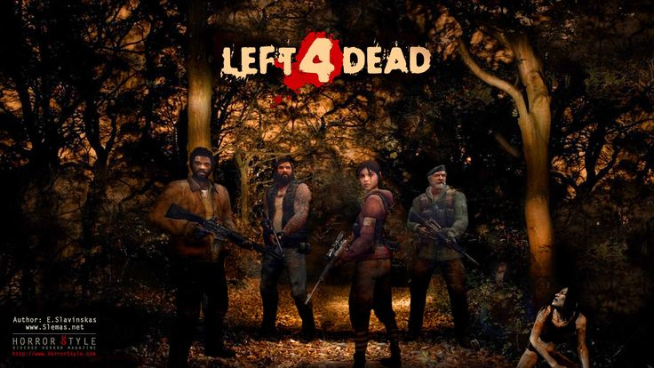
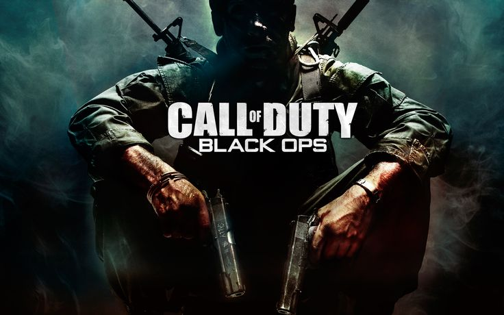

God of War Ragnarok
Desde hace años, las sagas de estos juegos, me gusto mucho ya que veia a mi hermano jugar el primero juego de la saga de God of War despues de varios años sacaron un juego nuevo de la misma version, esa me acuerdo que la jugue en mi ps4 con el play station plus me daba el beneficio de descargar ese juego y jugarlo, ese nuevo juego de la saga me gusto porque era una continuacion del primer god of war, en ese nuevo ahora era el dios de la guerra(Kratos) con su hijo Atreus, se enbarcan en una mision para soltar las senisas de su madre en una la montaña de los Dedos del Gigante, conciderada en el juego como la montaña mas alta de los 9 reinos, pero durante la mision Kratos empieza a tener encuentros con dioses de troya, los cuales le empiezan a traer problemas, uno de ellos es que su hijo se enferma muy gravemente por una maldicion que le pusieron, kratos tenia que salvarlo, pero la unica opcion para salvar a su hijo era volviendo a usar sus espadas del caos. Cuando me acabe ese juego que me lo acabe en menos de 1 mes, en el 2022, salio el Gor of War ragnarok, aqui pues se adentra a la historia de asgard, donde aparecen Odin, Thor y a Atreus lo concideraban como Loki, este juego me gusto mas porque aca pss es cuando sucede el ragnarok, el ragnarok significa que es la guerra de los nueve reinos, en este caso todos querian derrotar a asgard, una pelea muy epica, muy emocionante y se mucha adrenalina.

Top juegos de supervivencia
En esta seccion pondre los juegos de supervivencia, que para mi son mejores y hasta a tal grado que pueden ser jugables hasta dos veces una vez que se juegan, ya no te quieres despegar de ese juego
- DAYS GONE
- World War Z
- Left 4 Dead 
- Call of Duty Black Ops 
- Repetidora calibre 22
- MWS
- Stinger
- US556
- Repetidora calibre 22
- Baja potencia, pero permite disparar rapidamente y la ventaja es que se encontrara mucha municion
- MWS
- Fusil de asalro avanzado con altisimo poder de perforacion para este tipo de armas
- Stinger
- Una ametralladora extremadamente rapida. Se come la municion, asi que es complicada de manejar
- US556
- El fusil de alsalto calsico presente en rantos otros videojuegos. Su potencia, un cargador decente y presentaciones generales lo convierten en un artefacto todoterreno.


Days Gone
De todos los juegos de supervivencia que tiene PlayStation y cuando me llego primera PlayStation, venia con 3 juegos y sin conocer Days Gone, lo comenze a jugar, y solmanete con un dia tube para clavarme, porque tiene todo lo que un juego de supervivencia deberia de tener, le ponias mejoras a tu moto, se veia la mejora tenias un arbol de habilidades, cada una de diferente categoria era un mapa de mundo abierto, ibas con tu moto de campamento a campamento mejorabas tus armas, comprabas armas, recogias recursos del suelo con forme viajabas por el mapa no no, Days Gone, para mi lo tiene todo